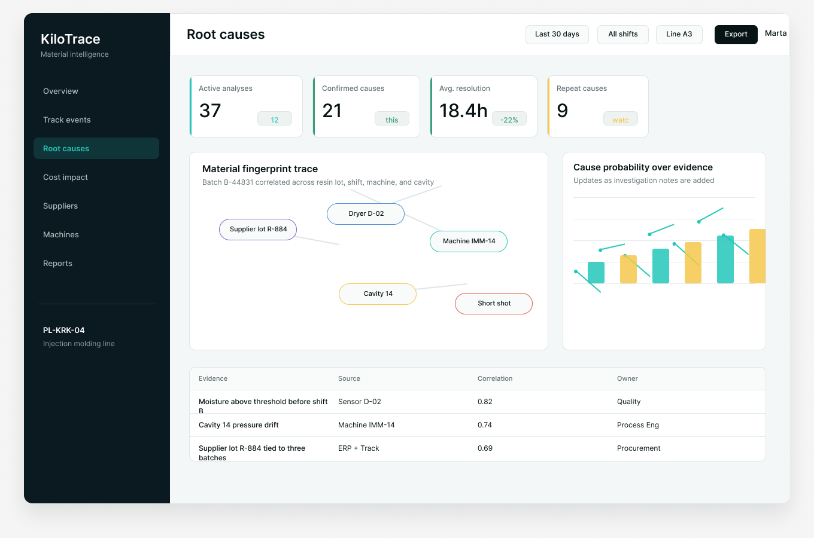

Cause graph
Link suspected causes to supporting evidence, confidence, owner, and next action.
Root gives process engineering and quality teams a shared investigation workspace where supplier lots, tooling, machine drift, shift records, and batch events become a material fingerprint.

Root-cause identity
Root helps teams recognize repeat signatures across material, machine, process, and human context. It keeps the story attached to the batch, not buried inside separate meetings.
Link suspected causes to supporting evidence, confidence, owner, and next action.
Review sensor drift, operator notes, supplier changes, and repeat scrap events in sequence.
Assign quality, process, procurement, maintenance, and finance owners without losing context.
Use cases
Show which batches, lines, and defect patterns correlate with a material lot.
Spot repeated cavity or machine behavior before it becomes another monthly loss story.
Keep containment, owner, evidence, and prevention status visible after the meeting ends.
Root works best when teams already track events but still struggle to agree on what caused them.